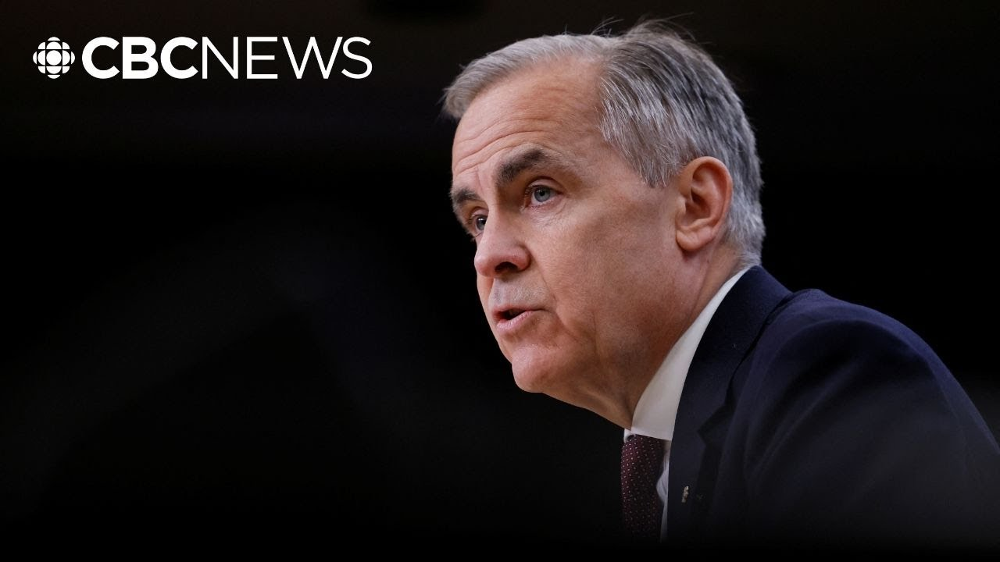

来B站一起耍【Global每日英语简报】
【完整演讲 | 卡尼在选举后首次新闻发布会上阐述政府优先事项】
Summary: On Monday, Canadians elected a new government to stand up to President Trump and build a strong economy, while demanding lower living costs and safer communities.
摘要： 周一，加拿大人选举出新政府以对抗特朗普总统并建设强大经济，同时要求降低生活成本并确保社区安全。

⏱️ Estimated Reading Time: 14 min
Um, on Monday, Canadians elected a new government to stand up to President Trump and to build a strong economy.
周一，加拿大人选举出一个新政府来对抗特朗普总统并建设强大经济。
Canadians also sent a clear message that their cost of living must come down and their communities need to be safe.
加拿大人还明确表示必须降低生活成本并确保社区安全。
As prime minister, I've heard these messages loud and clear and I will act on them with focus and determination.
作为总理，我已清晰听到这些诉求并将专注坚定地采取行动。
Canadians made their voices heard with a voter turnout rate that hasn't been seen in the last 30 years.
加拿大人以30年来最高的投票率发出了自己的声音。
Nearly 20 million Canadians voted and even more of them voted in early voting uh than ever before.
近2000万加拿大人投票，提前投票人数更是创下历史新高。
The engagement of Canadians at rallies on social media and around the dinner table was very high.
加拿大人在集会、社交媒体和日常讨论中的参与度极高。
And while different visions were put forth by various contenders, we disagreed agreeably, and the leader of every party quickly and graciously accepted the results.
尽管各竞选者提出不同愿景，我们友好辩论，所有政党领袖都迅速优雅地接受了结果。
At a time when democracies around the world are under threat, Canadians can be proud that ours remained strong.
当全球民主制度面临威胁时，加拿大人可自豪于我们的民主依然坚固。
As I've been clear since day one of my leadership campaign in January, I'm in politics to do big things, not to be something.
自一月竞选首日我就明确表示：从政是为干大事，而非图虚名。
And now that Canadians have honored me with a mandate to bring about big changes quickly, I will work relentlessly to fulfill that trust.
既然加拿大人赋予我快速变革的使命，我将不懈努力兑现这份信任。
As I stressed on election night, I am committed to working with others, governing as a team in cabinet and caucus and working constructively across parties in parliament.
如选举夜所述，我将与内阁、党团及议会各党派团队协作治国。
Working in real partnership with provinces, territories, and indigenous peoples and bringing together labor, business, and civil society to advance the nation building investments that will transform our economy.
与各省、地区和原住民真正合作，联合劳工、企业和公民社会推进重塑经济的国家建设投资。
In the coming weeks, I will unveil more of our plans to engage with Canadians as we embark on the biggest transformation of our economy since the end of the Second World War.
未来几周将公布更多计划，在二战以来最大经济转型中与国民携手并进。
This will be an incredibly exciting time as we take control of our economic destiny to create a new Canadian economy that works for everyone.
当我们掌控经济命运、打造普惠全民的新加拿大经济时，这将是个激动人心的时代。
We will begin to set out that new path for Canada with a new cabinet to be sworn in on the week of the 12th of May and the recall of Parliament on May 26th.
5月12日新内阁就职及5月26日议会复会时，我们将开启加拿大新道路。
We will have the privilege of welcoming His Majesty King Charles III who will deliver Canada's speech from the throne on May 27th.
5月27日我们将荣幸迎接查尔斯三世陛下宣读加拿大御座致辞。
Her Majesty the Queen will join this visit.
女王陛下将共同访问。
This is an historic honor which matches the weight of our times.
这是与时代分量相称的历史性荣耀。
Beginning with our relationship with the United States.
从与美国的关系开始。
As I've stressed repeatedly, our old relationship based on steadily increasing integration is over.
我多次强调，基于持续融合的旧关系已终结。
The questions now are how our nations will cooperate in the future and where we in Canada will move on campaign.
现在问题是两国未来如何合作，以及加拿大在竞选中的走向。
Shortly after the start of the election campaign, I met with uh President Trump or I spoke to him.
竞选开始不久，我与特朗普总统会面通话。
We both agreed.
我们达成共识。
On Tuesday, I had a very constructive call with President Trump and we agreed to meet next Tuesday in Washington.
周二与特朗普总统进行了建设性通话，约定下周二华盛顿会晤。
Our focus will be on both immediate trade pressures and the broader future economic and security relationship between our two sovereign nations.
重点将是紧迫贸易压力及两国未来更广泛的经济安全关系。
My government will fight to get the best deal for Canada.
我的政府将为加拿大争取最优协议。
We will take all the time necessary, but not more in order to do so.
我们将花费必要时间，但不会拖延。
In parallel, we will strengthen our relationships with reliable trading partners and allies.
同时巩固与可靠贸易伙伴及盟友的关系。
Canada has what the world needs and we uphold the values the world respects.
加拿大拥有世界所需，并秉持受尊重的价值观。
We will reinforce our strength here at home by building an economy that creates jobs, grows incomes, and withstand shocks.
通过建设创造就业、增长收入、抵御冲击的经济来增强国内实力。
We need to build one Canadian economy instead of 13.
需建设统一而非13个分散的加拿大经济。
By Canada Day, my government will reach that objective.
加拿大国庆日前，政府将实现该目标。
We will remove federal barriers to internal trade by July 1st to help unleash the full potential of Canada.
7月1日前消除国内贸易联邦壁垒，释放加拿大全部潜力。
We will work with provinces, territories, and indigenous groups to identify projects that are in the national interest.
与各省、地区和原住民团体合作确定符合国家利益的项目。
Projects that will connect Canada, deepen our ties with the world, and grow our economy for generations.
这些项目将联通加拿大、深化全球联系并为世代发展经济。
We'll make the Canadian government a catalyst for these projects, not an impediment.
使加政府成为项目催化剂而非阻碍。
And we'll always be guided by our conviction that our economy is only strong when it serves everyone.
始终坚信经济唯有服务全民才真正强大。
That means bringing down costs for Canadians and helping them get ahead.
这意味着降低国民生活成本并助其进步。
So, we will put more money in Canadians pockets with a middle class tax cut that will take effect by Canada Day, saving two income families up to $825 a year.
国庆日生效的中产阶级减税将为双收入家庭每年节省825加元。
We will protect the programs that saves families thousands of dollars a year, including Pharmarmacare and $10 a daycare.
保护每年为家庭节省数千加元的计划，包括全民药保和10加元日托。
We will expand the Canadian dental care plan to 8 million Canadians, saving the average family over $800 per visit.
将牙科护理计划覆盖800万加拿大人，每次就诊为普通家庭节省800加元。
To lower costs for first-time home buyers, we will cut GST on new homes at or under $1 million, allowing them to save up to $50,000.
为降低首购族成本，百万加元以下新房减免消费税，最高节省5万加元。
And we will lower the GST on homes between a million and a million and a half.
150万加元以内房屋消费税也将降低。
These tax measures will provide immediate relief, but they won't be sufficient to make housing affordable again.
这些减税可即时缓解压力，但不足以恢复住房可负担性。
For that, we have to build.
为此必须加快建房。
We will address failures in the housing market head on, unleashing the power of public private cooperation at a scale not seen in generations.
直面住房市场失灵，释放数代未见的公私合作力量。
We will slash development charges in half for all multi-unit housing.
多单元住房开发费减半。
That's about $40,000 off the cost of a two-bedroom apartment in Toronto.
多伦多两居室成本因此降低约4万加元。
And we will create an entirely new Canadian housing industry in modular and pre-fabricated housing using Canadian technology, Canadian skilled workers, and Canadian lumber.
用本国技术、技工和木材创建模块化预制房屋的全新产业。
We will build houses faster at lower costs with a smaller environmental footprint in construction and greater efficiency once families move in.
以更快速度、更低成本、更小环境足迹建房，入住后能效更高。
And to kickstart these efforts, we will create a new entity, Build Canada Homes, and provide $25 billion in financing to private developers.
为此将成立"加拿大建房"新机构，为私营开发商提供250亿加元融资。
We will construct two times as many uh homes each year and create a new industry, construction industry with Canadian technologies and qualified Canadian workers.
每年建房量翻倍，用本国技术和合格工人创建新建造业。
We'll focus on keeping Canada secure as a sovereign nation and Canadians safe in their communities.
重点维护加拿大主权安全及社区安全。
We'll build a stronger Canadian armed forces to protect Canadians, defend our sovereignty, and support our allies.
建设更强军队保护国民、捍卫主权、支援盟友。
We'll strengthen our border security with thousand more CBSA officers as well as scores of dog teams, drones, and scanners to fight the traffic of guns and drugs.
增派千名边境官员及大量警犬队、无人机和扫描仪打击枪支毒品走私。
will strengthen Canadian law enforcement by hiring a thousand more RCMP officers and giving law enforcement more tools to fight crime.
增聘千名骑警并赋予执法部门更多反犯罪工具。
We will toughen the criminal code and bail laws for those threatening the safety of Canadians, including making bail harder to get, for those charged with stealing cars, with home invasion, human trafficking, and smuggling.
对偷车、入室、人口走私等威胁安全者加强刑法和保释法。
We will build confidence in our justice system and the same thing with return our immigration to sustainable levels by capping the total number of temporary workers and international students at less than 5% of Canada's population by the end of 2027.
2027年前将临时工和留学生总数控制在人口5%以内，使移民回归可持续水平。
That's a sharp drop from the recent high of 7.3%.
较近期7.3%峰值大幅下降。
And this will help ease strains on housing, on public infrastructure, and social services.
这将缓解住房、公共设施和社会服务压力。
At the same time, we will work to attract the best talent in the world to build our economy.
同时努力吸引全球顶尖人才建设经济。
Canada has what everyone wants.
加拿大拥有世人向往的一切。
We're a confident nation that celebrates our diversity, that believes in and practices free speech, that respects the rule of law, that has a vibrant democracy.
我们是以多元为荣、践行言论自由、尊重法治、民主蓬勃的自信国度。
We value innovators and builders.
重视创新者和建设者。
We trust science.
相信科学。
We protect our immense natural heritage.
保护广袤自然遗产。
For Canadians abroad thinking about uh returning to build their lives in our nation, there's never been a better time to come home.
对考虑回国发展的海外加拿大人，此刻正是最佳归期。
In all our actions, we will be guided by fiscal a new fiscal discipline.
所有行动都将遵循新财政纪律。
Our government will spend less so that Canadians can invest more.
政府缩减开支让国民增加投资。
Day-to-day government spending, the government's operating budget, has been growing by an unsustainable 9% every year.
政府日常支出年增9%的现状不可持续。
We will bring that down to 2%.
将降至2%。
Less than half the average nominal growth rate of the economy.
不到经济名义增长率的一半。
We will not cut any transfers to provinces, territories, or individuals.
不会削减对省、地区或个人的转移支付。
Instead, we'll balance our operating budget over the next three years by cutting waste, capping the public service, ending duplicative programs, and deploying technology to boost public sector productivity.
而是通过削减浪费、限制公务员规模、终止重复计划、运用技术提升公部门效率，在三年内平衡运营预算。
We will use scarce taxpayer dollars to catalyze massive private investment.
用有限税款催化大规模私人投资。
By working together, we can give ourselves far more than the Americans can ever take away.
同心协力创造的将远超美国能夺走的。
By working together, we can build Canada strong.
团结共建强大加拿大。
To uh overcome these challenges, Canada has to be united, guided by this approach, opposition leaders.
克服这些挑战需要加拿大团结，反对党领袖们也应循此方针。
I told them of my intention to work with them to make our government efficient, workable, to support workers and businesses, and to bring our economy back on track.
我已表明愿与其合作打造高效务实政府，支持劳工企业，重振经济。
I also spoke with the premers of provinces and territories who are essential partners in the with the federal government and with them I hope to be able to continue the work that is needed.
也与作为关键合作伙伴的省地区首长通话，希望延续必要工作。
that we that that is needed with premers uh before that we started before the election when we decided and agreed to bring down interprovincial trade barriers and help labor mobility in the country in the NHL play for a variety of teams passionately against each other.
如选前与各省长达成共识：消除省际贸易壁垒，促进国内劳动力流动。
But when they're in a once-ina-lifetime series such as the Four Nations or the Olympics, those same Canadians come together to win it all.
但在四国赛或奥运会等毕生难逢的赛事中，这些加拿大人会团结争胜。
During elections, Canadians play and cheer for different teams.
选举期间加拿大人为不同阵营助威。
Now that election is over, and we are in a once-in-a-lifetime crisis.
如今选举结束，我们面临世代危机。
It's time together.
此刻需要团结。
It's time to come together to put on our Team Canada sweaters and win big.
是时候穿上"加拿大队"球衣共创辉煌。
It is time to unite.
团结的时刻到了。
United, Canada can do difficult things, things that have seemed impossible.
团结的加拿大能完成看似不可能的难事。
Now is the time for ambition, to be bold, to meet this crisis with an overwhelming positive force that is a united Canada.
此刻需要雄心壮志，以团结加拿大的强大正能量应对危机。
It's time to build.
建设的时刻到了。
And my government is getting to work to build.
我的政府已开始行动。
Build big, bold, and build now.
大规模、大胆、即刻建设。